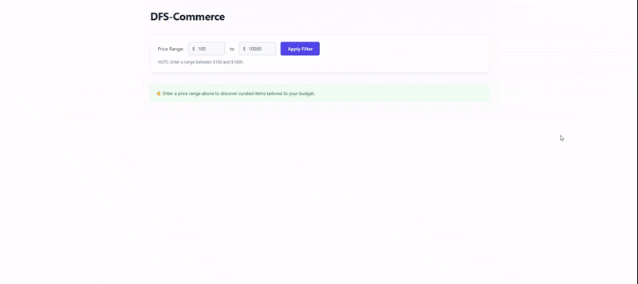
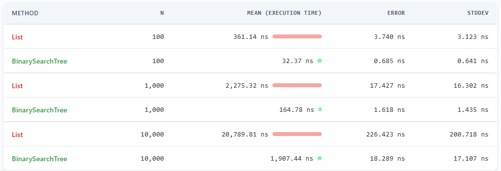

I have spent over a decade evolving alongside the web, moving from the rigid world of legacy ASP.NET Webforms to modern microservices, cloud-native systems, and Azure-driven architectures. Somewhere along that journey, I realized the best software is not just scalable or efficient; it is truly adaptable. It is the kind of technology that evolves as quickly as the people using it.
Right now, I am at the intersection of full-stack engineering and AI, treating Large Language Models not as hype, but as the next meaningful layer of modern software development. Whether I am reducing load times from 30 seconds to 3, architecting AI-powered analysis tools, or exploring autonomous AI agents, I am motivated by one thing: making complex systems feel simple, intuitive, and useful.
I am a Microsoft developer by foundation, a React developer by choice, and an AI explorer by curiosity. More than just titles, I see myself as someone who is continuously evolving, both as an engineer and as a person.
What keeps me interested in this field is not just writing code. It is the process of constantly reinventing myself through technology.
I am naturally curious, self-driven, and focused on growth. This is why, outside of work, I am usually deep into AI, experimenting with agentic workflows, exploring new ideas, or building side projects simply because I enjoy figuring things out.
Right now, I am at the intersection of full-stack engineering and AI, treating Large Language Models not as hype, but as the next meaningful layer of modern software development. Whether I am reducing load times from 30 seconds to 3, architecting AI-powered analysis tools, or exploring autonomous AI agents, I am motivated by one thing: making complex systems feel simple, intuitive, and useful.
I am a Microsoft developer by foundation, a React developer by choice, and an AI explorer by curiosity. More than just titles, I see myself as someone who is continuously evolving, both as an engineer and as a person.
Beyond the Boilerplate: Why AI Raises the Bar for Core Engineering
The rise of generative AI hasn’t made fundamental engineering obsolete—it has raised the bar. While AI handles the boilerplate code, humans must still architect the vision, translating complex business demands into highly structured, isolated engineering requirements. This demands sophisticated system design intuition—an analytical mindset that AI cannot replicate. While AI can stitch together APIs, it lacks the deep intuition required to select and optimize the data structures that prevent system bottlenecks at scale. To prove the real-world impact of these engineering fundamentals, I built the real-time business use cases detailed below. Beyond just building these applications, I generated performance benchmark reports that demonstrate exactly how selecting the right data structure can drastically outperform traditional collections.
BalancedBook.NET: High-Frequency AVL Engine
View on GitHub ↗
Built a real-time stock order book simulation. Instead of relying on built-in collections, I implemented a self-balancing AVL Tree data structure from scratch to handle highly volatile, streaming market order traffic.
By ensuring structural balance during continuous insertions and cancellations, the matching engine aggregates depth metrics and isolates top-tier Bid/Ask queues deterministically in O(log n) time ensuring structural performance that an unguided generative model could easily skew.
By ensuring structural balance during continuous insertions and cancellations, the matching engine aggregates depth metrics and isolates top-tier Bid/Ask queues deterministically in O(log n) time ensuring structural performance that an unguided generative model could easily skew.

Real-time order matching engine UI dashboard feed

BenchmarkDotNet results: List execution scales linearly while custom AVL Tree stays efficient (Click to view report)
DFS-Commerce: In-Memory BST Catalog Filter
View on GitHub ↗
Built an in-memory e-commerce pricing engine designed to handle ultra-low latency catalog filtering. Instead of relying on standard linear database scans or flat built-in collections which degrade under heavy search volumes, I implemented a custom Binary Search Tree (BST) to manage high-frequency, range-based consumer traffic natively in memory.
By substituting a traditional sequential array pass with a pruned Depth-First Search (DFS) traversal, the engine bypasses irrelevant inventory branches completely. This cuts down the worst-case lookup bottleneck from an expensive linear O(n) search down to an optimal O(log n + k) range-query time, ensuring high-throughput retail search performance that retains structural efficiency even as product catalogs scale ten-fold.
By substituting a traditional sequential array pass with a pruned Depth-First Search (DFS) traversal, the engine bypasses irrelevant inventory branches completely. This cuts down the worst-case lookup bottleneck from an expensive linear O(n) search down to an optimal O(log n + k) range-query time, ensuring high-throughput retail search performance that retains structural efficiency even as product catalogs scale ten-fold.

In-Memory Catalog Filter UI

BenchmarkDotNet results: List execution scales linearly while Binary Search Tree stays efficient (Click to view report)